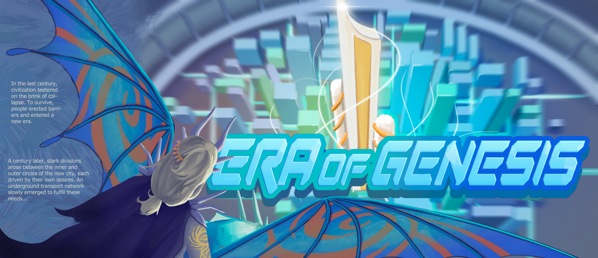
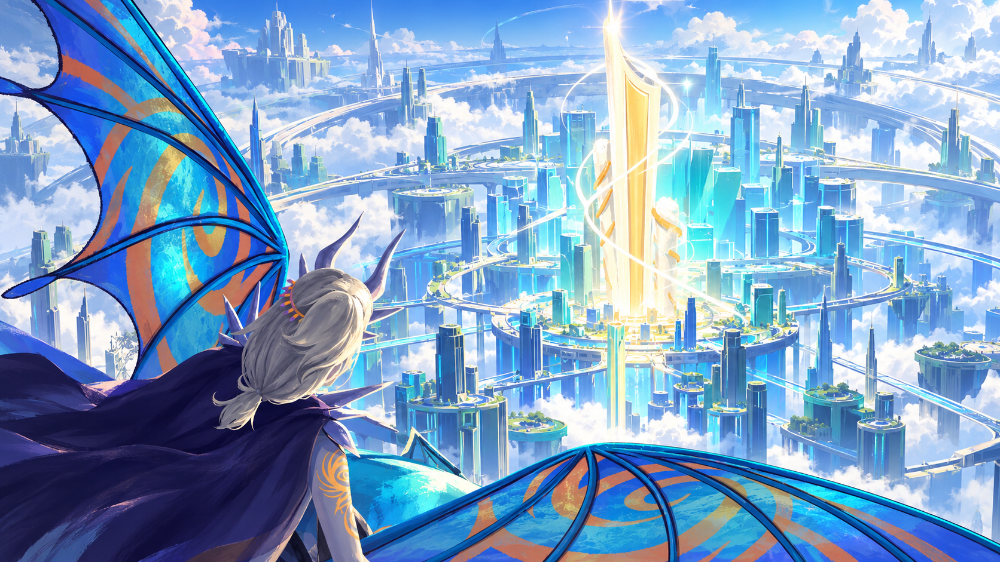
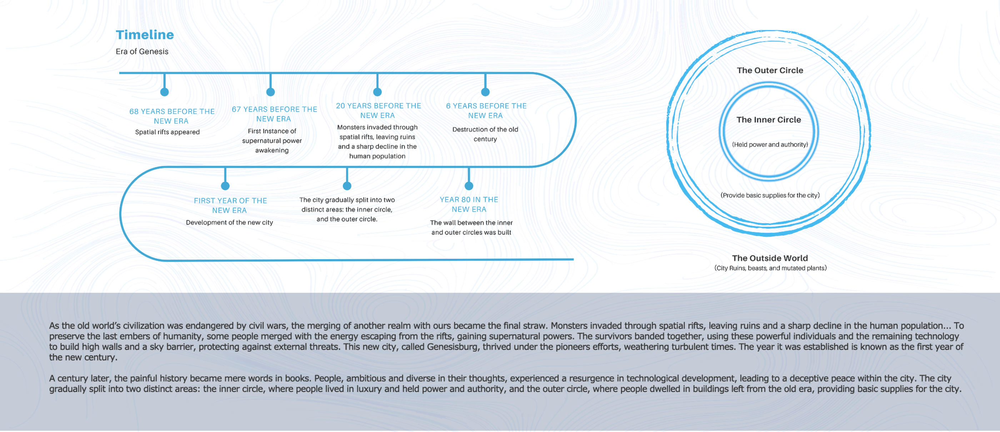
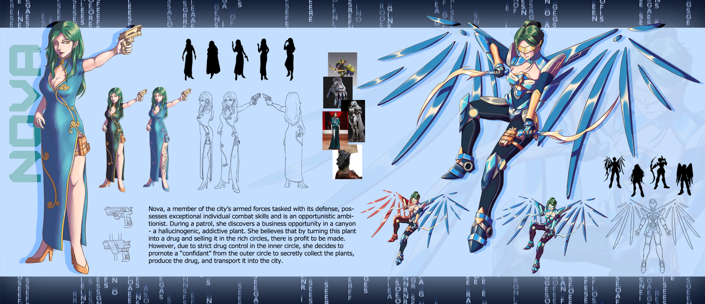
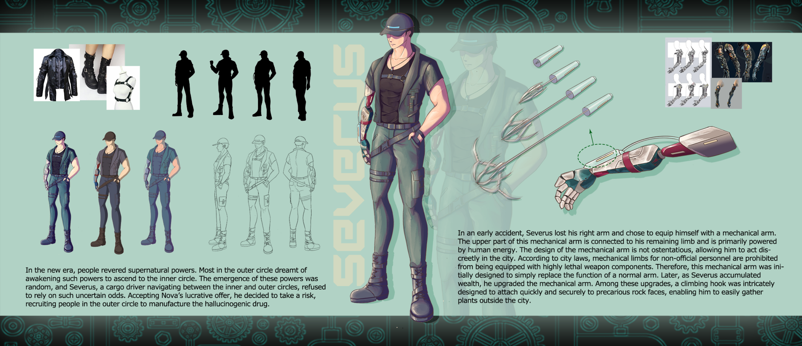
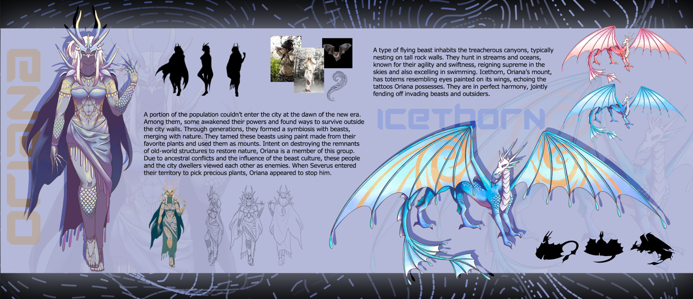
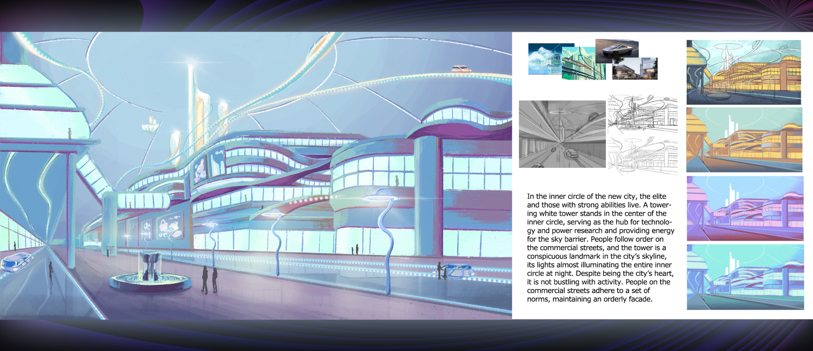
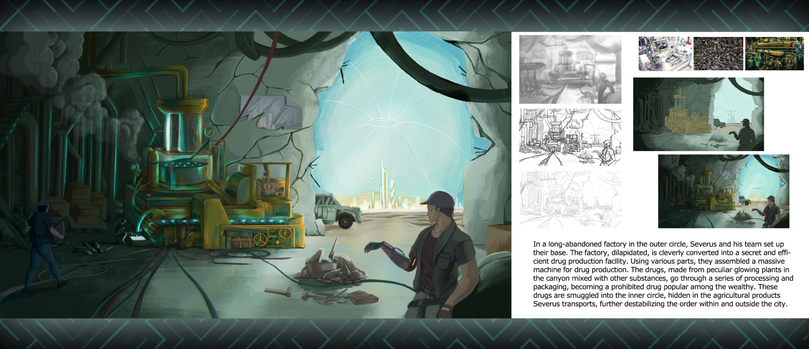
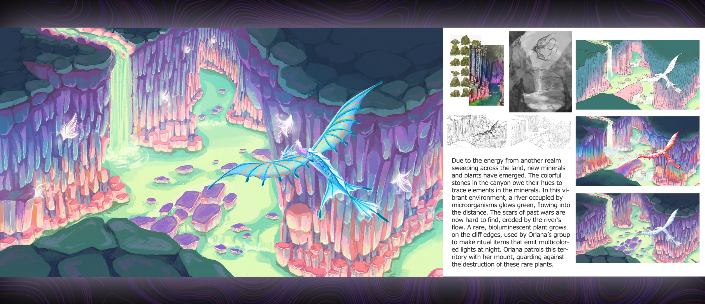

中文译文
文明崩塌之后上个世纪，文明濒临崩溃。为了生存，人们筑起屏障，进入一个新的时代。
一个世纪后，新城的内圈与外圈之间出现了鲜明分化，两个区域的人们各自追逐不同的欲望。为满足城内需求，一套地下运输网络逐渐形成……
异界入侵后，人类在废墟中建立新城，并逐渐分化为掌握权力的内圈与承担供给的外圈。超能力、城市秩序、变异生态与利益交易交织，构成《创世纪元》的未来奇幻世界。


上个世纪，文明濒临崩溃。为了生存，人们筑起屏障，进入一个新的时代。
一个世纪后，新城的内圈与外圈之间出现了鲜明分化，两个区域的人们各自追逐不同的欲望。为满足城内需求，一套地下运输网络逐渐形成……

内战使旧世界文明岌岌可危，另一个位面的融合成为压垮文明的最后一击。怪物经由空间裂隙入侵，城市沦为废墟，人口急剧减少。为保留人类最后的火种，一部分人吸收裂隙逸散的能量，获得超自然力量。幸存者联合起来，依靠能力者与残存科技建起高墙和天空屏障，以抵御外部威胁。
这座名为“创世纪城”的新城在先驱者的努力下逐渐繁荣，熬过动荡岁月。城市建立之年被定为新纪元元年。
随着科技复兴，城市表面恢复了秩序，却形成了分层结构。内圈聚集精英与拥有强大能力的人，他们掌握权力与资源；外圈居民生活在旧时代遗留的建筑中，为城市提供基础物资。城墙之外则是城市废墟、野兽与变异植物。

Nova 是城市武装力量的一员，负责守卫城市，拥有出色的个人战斗能力，也善于寻找机会。
一次巡逻中，她在峡谷里发现一种具有致幻和成瘾性的植物。Nova 认为，若将这种植物制成药物，卖给富裕的内圈居民，就能从中获利。然而内圈实行严格的药物管制，因此她决定在外圈发展一名心腹，秘密采集植物、制成药物并运入城内。

新纪元里，人们崇敬超自然力量。外圈的大多数人梦想觉醒能力、进入内圈。能力的出现具有随机性；在内外圈之间往返的货运司机 Severus 不愿把希望寄托于不确定的觉醒。他接受了 Nova 的高额报酬，决定冒险行事，招募外圈居民参与致幻药物的生产。
Severus 早年遭遇事故，失去了右臂，于是为自己配备机械手臂。义肢上端连接残肢，主要由人体能量驱动。它外观低调，让他能在城内隐蔽行动。城市法规禁止非官方人员配备高致命性武器部件，因此这条手臂最初只用于替代普通手臂的功能。
后来 Severus 积累财富并升级义肢，加入攀爬钩，使其能快速、稳固地附着在险峻岩壁上，便于在城外采集植物。

新纪元初期，有一部分人无法进入城市。他们中的一些人觉醒了力量，在城墙之外寻找生路。经过数代发展，他们与野兽建立共生关系、融入自然；他们用喜爱的植物制成颜料驯养野兽，并以野兽为坐骑。
这群人希望摧毁旧世界建筑的残骸，让自然重新生长。Oriana 是其中一员。由于祖辈冲突及兽群文化的影响，他们与城内居民彼此视为敌人。Severus 为采集珍贵植物进入其领地时，Oriana 出面阻止。
一种飞行野兽栖息在险峻峡谷，通常在高耸岩壁上筑巢。它们在溪流与海洋中捕猎，以敏捷迅疾著称，既能翱翔天空，也擅长游泳。
冰角兽是 Oriana 的坐骑，翅膀上绘有类似眼睛的图腾，与 Oriana 身上的纹身相呼应。人与坐骑和谐共生，共同抵御入侵的野兽与外来者。

新城内圈居住着精英与拥有强大能力的人。中央矗立着一座白色高塔，作为科技与能源研究中心，为天空屏障提供能量。商街的行人遵循既定秩序，高塔则成为城市天际线上的醒目标志；夜晚，塔上的灯光几乎照亮整个内圈。
尽管内圈是城市核心，街道却并不热闹。居民遵守一套行为规范，维持井然有序的外在表象。

Severus 和团队在外圈一座久已废弃的工厂建立基地。这座破败的工厂被巧妙改造成隐蔽而高效的制药设施；团队利用各类零件组装出大型制药机器。峡谷中发光的奇异植物与其他物质混合，经加工、包装后成为违禁药物，在富裕人群中流行。
药物被藏在 Severus 运送的农产品中，走私进入内圈，进一步扰乱城内外原有的秩序。

来自另一位面的能量席卷大地后，新的矿物与植物逐渐出现。峡谷中缤纷的岩石因含有微量元素而呈现不同色彩。微生物聚集的河流泛着绿色荧光，蜿蜒流向远方；往昔战争留下的伤痕也在河水冲刷下逐渐难以辨认。
一种稀有的生物发光植物生长在峭壁边缘。Oriana 所属的族群用它制作夜间会发出多彩光芒的仪式用品。她骑着坐骑巡守这片土地，保护这些珍稀植物免遭破坏。